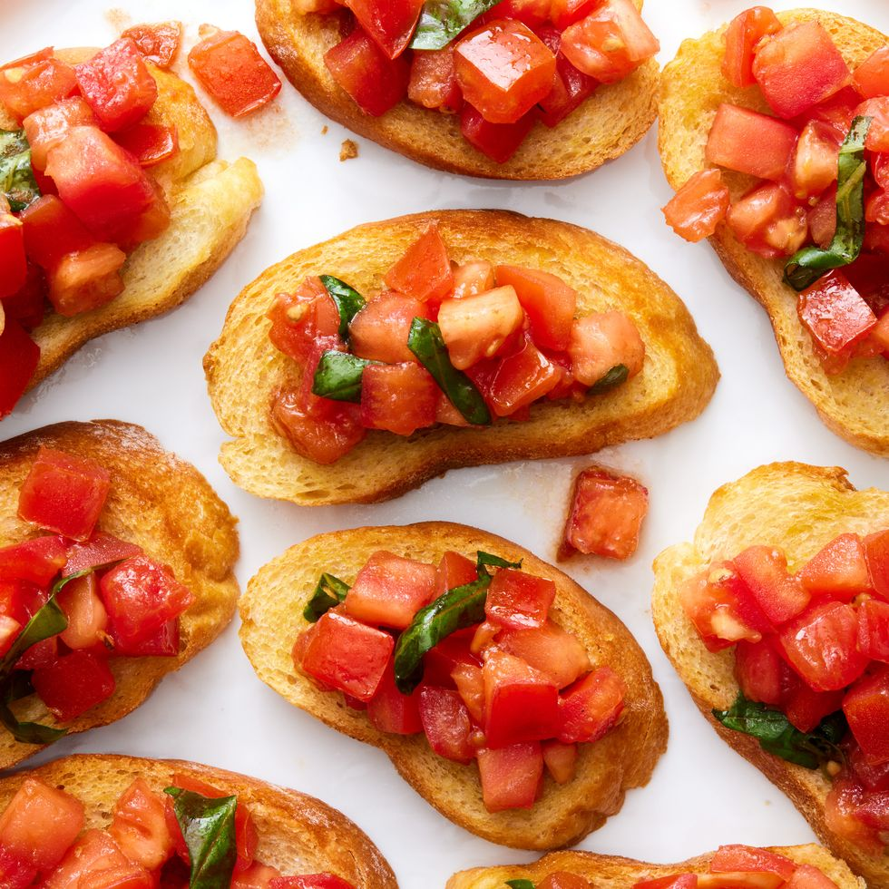

Bruschetta

The Cold Weather Favourite
Ingredients
- extra virgin olive oil
- 4 cloves of garlic
- 4 finely chopped roma tomatoes
- 1 teaspoon sea salt
- thinly sliced fresh basil
- balsamic vinegar
- 1 baguette or ciabatta bread
Steps
- Add olive oil to skillet with garlic cloves
- Cook until golden
- Strain diced tomatoes over collander, add salt
- Leave salted tomatoes to sit for 5 minutes
- Transfer to bowl and add basil vinegar and 1/2 tsp salt
- Add garlic and oil from skillet let marinate for 30 mins
- Preheat oven to 180c
- Brush both sides of bread with oil, cook for 5 minutes
- Turn bread and cook for further 5 minutes
- Rub cloves onto bread on one side
- Arrange bread onto platter and add tomatoes
- Dress with balsamic if desired and serve
Feel like something else? Return to recipe index.